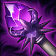
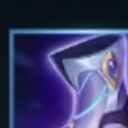
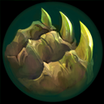

核心裝備

時光之杖生命、魔力與法強都適合需要貼近輸出的雷茲。
- 大天使之杖
大量魔力與護盾提高持續施法與近距換血容錯。
- 死亡之帽
中後期直接放大整套技能傷害。
- 虛空之杖
敵方魔抗成形後維持法術穿透。
- 峽谷製造者
長時間團戰提供持續傷害與續航。
Ryze · 短手連鎖擴散／高頻技能型戰鬥法師
ARAM 不要為了打一套直接走進五人射程。先用三技把印記鋪到前排或兵線，再用一技觸發擴散；需要留人時用二技接三技強化控制。大絕以調整整隊位置與追擊為主，不要把隊友送進沒有視野的深處。
本站評級理由：雷茲在單線能靠法術擴散快速清兵並反覆壓低前排，技能循環成形後持續輸出很高；但射程偏短、需要穩定走位與技能順序，因此在 A 級屬於熟練度越高越強的戰鬥法師。
標準 ARAM 採 100%／100% 基準；未將未明確標註同步標準 ARAM 的 AAA ARAM 專屬數值混入。攻略以 7.2b 現行英雄與裝備環境整理。

生命、魔力與法強都適合需要貼近輸出的雷茲。
大量魔力與護盾提高持續施法與近距換血容錯。
中後期直接放大整套技能傷害。
敵方魔抗成形後維持法術穿透。
長時間團戰提供持續傷害與續航。
補魔力與法術輸出，最符合高頻施法需求。

需要更高爆發與法穿時升級。
短手法師最需要施法後的移速來追擊或拉開。
增加魔力上限，配合魔力裝提升續戰。
技能加速讓連招循環更快。
提高前期遠距消耗。

被近戰切入時提供一輪保命。

補短手法師的進退位置。
長團中持續調整距離，方便追擊與拉扯。
1 技 > 3 技 > 2 技
主 1 提高核心輸出，次 3 強化印記與擴散；二技主要拿來留人與自保，大絕能點就點。
先用兵線或前排鋪三技印記，再用一技打擴散，不要站在最前面硬換血。
時光＋大天使成形後可以更積極靠近前排輸出；觸發相位衝擊後立刻調整站位，避免被集火。
團戰先處理能碰到的前排，利用高頻技能持續壓血。大絕優先用於追擊、撤退或重整隊形，不做無溝通的強制傳送。
敵方先手魔法控制多時提高容錯。
刺客或強開多時用主動無敵拖過爆發。
敵方偏脆、需要更高收割時使用。
看遊戲卡片下方分類 → 點相同分類 → 看左側 S+／S／A。
一、三技能需要高頻施放，技能冷卻與命中增幅能直接提高連鎖輸出。
時光與大天使本就堆高魔力，魔力增幅會直接改善雷茲的資源與傷害循環。
多段技能連續命中容易觸發雷霆系列，適合長時間正面輸出。
二技能的限制效果能穩定觸發控制增幅，幫助自己繼續站樁施法。
相位衝擊本就強調技能後移速，額外跑速能提升追擊與撤退。
技能暴擊與投射技能加速等單卡能進一步放大高頻施法。
v80.15.0 ARAM A 第六批：依標準 ARAM 固定母版補齊完整攻略；標準 ARAM 與 AAA ARAM 數值分開處理，並檢查裝備、符文與技能圖片路徑。
ARAM 使用獨立於召喚峽谷的資料集；本站會把官方模式平衡、單線 5v5 特性與出裝／符文適配分開判斷，而不是直接複製峽谷配置。